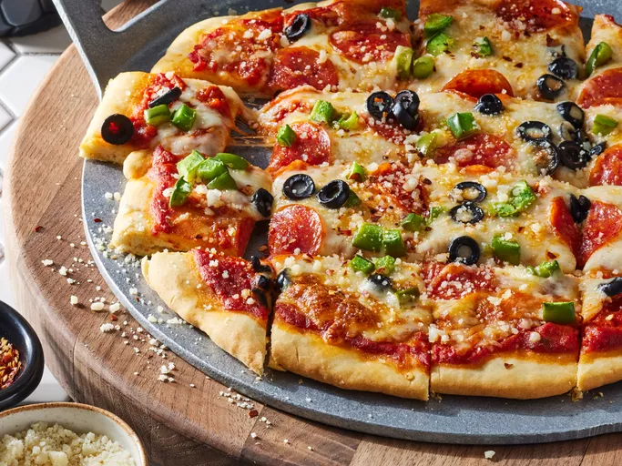

Home
Easy No-Yeast Pizza Crust

This no-yeast pizza dough is quick to make and bakes up into a tender and tasty crust for your favorite pizza toppings.
No yeast? No problem! This no-yeast pizza dough recipe is not only quicker than traditional pizza dough,
it yields perfect homemade pizza crust every time!
Ingredients:
- 1 1/3 cups all-purpose flour
- 1 teaspoon baking powder
- 1/2 teaspoon salt
- 1/2 cup fat-free milk
- 2 tablespoons olive oil
Steps:
- Gather all ingredients
-
Mix flour, baking powder, and salt together in a bowl;
stir in milk and olive oil until a soft dough forms.
-
Turn dough onto a lightly floured surface and kneed 10 times.
Shape dough into a ball; cover with an inverted bowl and let sit for 10 minutes.
Meanwhile, preheat the oven to 400 degrees F (200 degrees C).
-
Roll dough into a 12-inch circle on a baking sheet.
-
Bake the crust in the preheated oven for 8 minutes.
-
Add your favorite toppings and bake until the crust is golden brown,
about 10 to 15 minutes more. Enjoy!